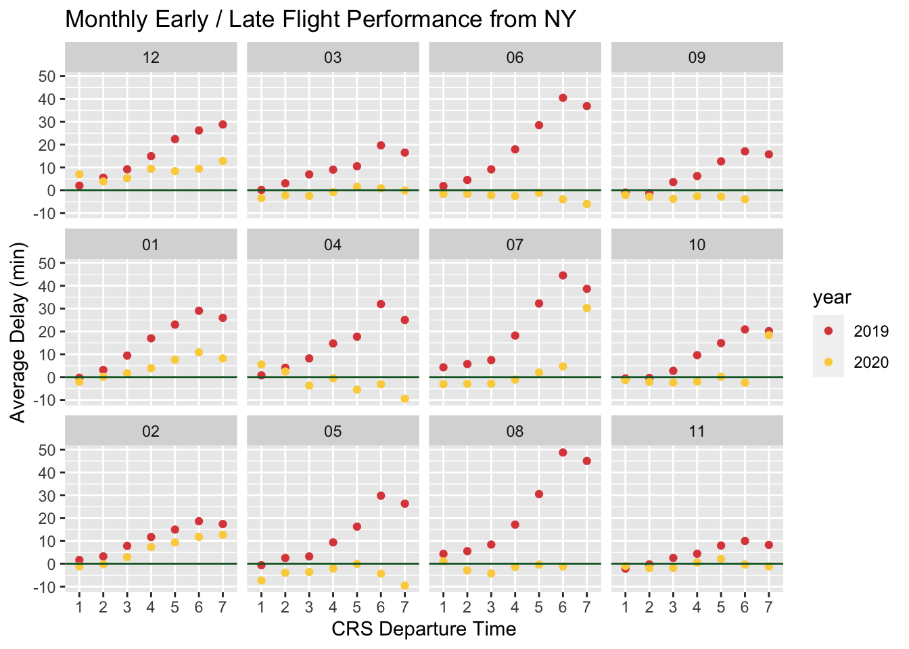

Chapter 5 Results
5.1 Compare Carriers’ On-Time Performance
As we can see from the figure below, DL (Delta Air Lines Inc.) have over 3,000 flights delayed during January 2019 from and to New York state, AA (American Airlines Inc.) also have more than 2,000 flights delayed, and the number is approximately 1,200 for B6 (JetBlue Airways). This is justifiable since these are the major airlines that conduct the most domestic flights, and the number of delayed flights, certainly, increases as the number of total conducted flights increases. Therefore, we make another bar pllot, showing the delay frequency of these carriers. Here, we can clearly see that HA (Hawaiian Airlines Inc.) has the highest delay rate of 38.7%. Note that this figure only shows the number of times that delay occurs. On the other side, we need to evaluate the average severity of the delays, i.e. the average time of the delays for each carrier.


Therefore, we make another bar plot manifesting the average delay time for each carrier airline. Using the same dataset as above (flights from and to New York state during January 2019), we can see that UA (United Air Lines Inc.) have the longest average delay time of 104.83 minutes. HA (Hawaiian Airlines Inc.), NK (Spirit Air Lines), DL (Delta Air Lines Inc.), B6 (JetBlue Airways), AA (American Airlines Inc.) and F9 (Frontier Airlines Inc.) all have average delay time longer than an hour.

Moreover, we hope to explore the results for concrete delay reasons, i.e. CARRIER_DELAY, WEATHER_DELAY, NAS_DELAY, SECURITY_DELAY and LATE_AIRCRAFT_DELAY. For each reason, we make two figures showing the count of delays and average delay time with respect to each carrier.
From the figures, we can find that the most common and severe reason causing flight delays is LATE_AIRCRAFT_DELAY, which presumably can be due to the late arrival or preceding flights. There are almost 2,000 DL (Delta Air Lines Inc.) flights are delayed due to this reason, and the average waiting time exceeds 2 hours for HA (Hawaiian Airlines Inc.) flights.
The second most common reason is NAS_DELAY, i.e., national air system delay, but the average time caused by this is typically not as long as that caused by other reasons, mostly within an hour.
CARRIER_DELAY is the third most common reason that causes delays. This happens a lot of times for DL (Delta Air Lines Inc.), B6 (JetBlue Airways), and AA (American Airlines Inc.). Further, onn average, when carrier delay happens, the waiting time for UA (United Air Lines Inc.) flights is over 100 minutes.
WEATHER_DELAY is less frequent than the three above. DL (Delta Air Lines Inc.) and AA (American Airlines Inc.) have about 150 delays caused by weather, which is a very small proportion of all delays. However, the time is highly variable- the longest is 118 minutes for DL (Delta Air Lines Inc.), and the shortest is only 12.5 minutes.
Among all 5 reasons, SECURITY_DELAY is the rarest, and only occurs 15 times. Therefore, we do not discuss this reason in detail.


As we can see, both delay count and delay time are reasonable measures to the on-time performance of flight and need to be combine when choosing airlines.

The heatmap above shows normalized value of delay count and time of the airline carriers in total and also for all five reasons, respectively. In each column, we can see which carrier has most delay flights and longest average delay time by inspecting the color depth. For instance, DL has most flights delayed for aircraft reason, and HA has the longest average delay time. As for some specific delay reasons, the heatmap also provides similar information, e.g. AA may have the longest average delay time for the reason of security. Heatmap provides us an efficient tool to make decision on flight when considering more details in comprehension, which will be discussed later in our problem3.
5.2 On-Time Performance Accross the Day
In addition to comparing the differences among the various airlines, we also compared the on-time performance of flights at difference time of a day. We divide the 24 hours of a day into 8 groups, one group every three hours, and calculated the average delay time of departure and arrival. As we can see in the plot below, flight performance of 2020 is obviously better than in 2019. The green horizontal line at level 0 indicates the flight delays or not. Specifically, flights in 2020 almost arrive in advance to their destination no matter they departs lately or not. Unfortunately, flights in 2019 almost depart lately. Moreover, late flights seem to performance worse than early flights in general.

Next, we explore the difference among flights to different destinations. We divide them into groups by state in the following graph. The trend in the previous graph is still easy to see in this one- flights that depart later in a day tend to have longer average delay time, and that the on-time performance for flights in 2020 is significantly better than that in 2019. Note that flights to some destinations e.g. HI, MT, NM, are only provided in certain periods, which may caused by the distance and passenger volume.


The plot above shows flights performance in each months, which also yields the two conclusions mentioned before. Moreover, some other interesting observations are: (1) in winter (Dec., Jan., Feb.), flight performance is in general worse than in other seasons, especially for those late flights, which may due to the cold weather. (2) Fall (Sept., Oct., Nov.) seems to have the best flight performance.
3D plot is more powerful to show the variation of a quantity grouped by multiple dimensions. Flights in June, July and August from 9pm to 12 pm have the longest average delay time.
5.3 Flights to Three Airports near NYC (JFK, LGA, EWR)
Columbia University is located in the City of New York, and there are three major airports near the city, which are John F. Kennedy International Airport (JFK), LaGuardia Airport (LGA) and Newark Liberty International Airport (EWR). Suppose a person wants to travel to New York, how should he/she choose which airport to fliy to? We want to hellp passengers wisely choose their destination airports, and make a graph to illustrate the differnce of flight delay time towards the three airports, faceted by each state. For example, if someone wants to fly to New York from Louisiana (LA), JFK would be his/her best choice from the perspective of minimizing delay time. We can also see thatfFor some states, there are only flights to one or two of the airports, like Alaska (AK), Alabama (AL), etc. Those states that do not have direct flights towards NYC are not displayed in the plot.

Here again, we apply a tool of heatmap to assist a visitor to NYC with the optimal flight choice. Note that our previous plot only provides an averaged time delay from some origin state over three airports, but not specified to different airlines, hence not enough to guide the user to all details in choosing flights. However, to include the information of airlines, there are in total four variables in our data, which may be hard to present by using scatter plot or bar plot. The heatmap uses color depth to reflect the value of averaged delay time with respect to origin state and airline. As we can see in the plot, for example, if you are a visitor from KY to NYC, then the best choice, with all things considered, may be the airline F9 and the airport LGA.